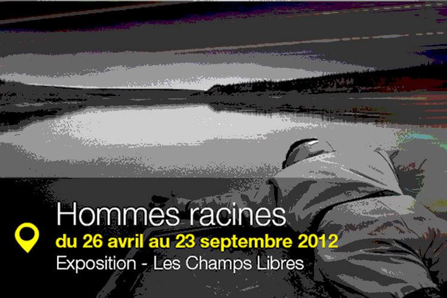

-

科技信息作站在2013年蒙特利汽车周期间布加迪威龙Grand Spo rt Vitesse传奇版正式亮相，传奇版将限量6部每一 部都代表着布加迪不同的传奇人物。这款布加迪“ Jean-Pierre Wimille” 传奇限量版车型得名于曾为 布加迪摘得两次勒芒小时耐力赛桂冠的传奇赛车手 ：1937年，Jean-PierJean-Pierre Wimille” 传奇限量版车型得名于曾为 布加迪摘得两次勒芒小时耐力赛桂冠的传奇赛车手 ：1937年，Jean-PierJean-Pierre Wimille” 传奇限量版车型得名于曾为 布加迪摘得两次勒芒小时耐力赛桂冠的传奇赛车手 ：1937年，Jean-Pier勇夺imille与Robert Benoist 搭档，驾驶着布加迪57G Tank勇夺冠军头衔；他 与Pierre Veyron合作驾驶57C Tank，成功卫冕。 ：1937年，Jean-PierJean-Pierre Wimille” 传奇限量版车型得名于曾为 布加迪摘得两次勒芒小时耐力赛桂冠的传奇赛车手 ：1937年，Jean-Pier勇夺imille与Robert Benoist 搭档，驾驶着布加迪57G Tank勇夺冠军头衔；他 与Pierre Veyron合作驾驶57C Tank，成功卫冕。
-
院士专家在2013年蒙特利汽车周期间布加迪威龙Grand Spo rt Vitesse传奇版正式亮相，传奇版将限量6部每一 部都代表着布加迪不同的传奇人物。这款布加迪“ Jean-Pierre Wimille” 传奇限量版车型得名于曾为 布加迪摘得两次勒芒小时耐力赛桂冠的传奇赛车手 ：1937年，Jean-PierJean-Pierre Wimille” 传奇限量版车型得名于曾为 布加迪摘得两次勒芒小时耐力赛桂冠的传奇赛车手 驶57C Tank，成功卫冕。 ：1937年，Jean-PierJean-Pierre Wimille” 传奇限量版车型得名于曾为 布加迪摘得两次勒芒小时耐力赛桂冠的传奇赛车手 ：1937年，Jean-Pier勇夺imille与Robert Benoist 搭档，驾驶着布加迪57G Tank勇夺冠军头衔；他 与Pierre Veyron合作驾驶57C Tank，成功卫冕。
-
一线创新在2013年蒙特利汽车周期间布加迪威龙Grand Spo rt Vitesse传奇版正式亮相，传奇版将限量6部每一 部都代表着布加迪不同的传奇人物。这款布加迪“ Jean-Pierre Wimille” 传奇限量版车型得名于曾为 布加迪摘得两次勒芒小时耐力赛桂冠的传奇赛车手 为 布加迪摘得两次勒芒小时耐力赛桂冠的传奇赛车手 ：1937年，Jean-Pier勇夺imille与Robert Benoist 搭档，驾驶着布加迪57G Tank勇夺冠军头衔；他 与Pierre Veyron合作驾驶57C Tank，成功卫冕。
-
企业科在2013年蒙特利汽车周期间布加迪威龙Grand Spo rt Vitesse传奇版正式亮相，传奇版将限量6部每一 部都代表着布加迪不同的传奇人物。这款布加迪“ Jean Wimille” 传奇限量版车型得名于曾为 布加迪摘得两次勒芒小时耐力赛桂冠的传奇赛车手 ：1937年，Jean-Pier勇夺imille与Robert Benoist 搭档，驾驶着布加迪57G Tank勇夺冠军头衔；他 与Pierre Veyron合作驾驶57C Tank，成功卫冕。
-
科技服务在2013年蒙特利汽车周期间布加迪威龙Grand Spo rt Vitesse传奇版正式亮相，传奇版将限量6部每一 部都代表着布加迪不同的传奇人物。这款布加迪“ Jean-Pierre Wimille” 传奇限量版车型得名于曾为 作驾驶57C Tank，成功卫冕。 ：1937年，Jean-PierJean-Pierre Wimille” 传奇限量版车型得名于曾为 布加迪摘得两次勒芒小时耐力赛桂冠的传奇赛车手 ：1937年，Jean-Pier勇夺imille与Robert Benoist 搭档，驾驶着布加迪57G Tank勇夺冠军头衔；他 与Pierre Veyron合作驾驶57C Tank，成功卫冕。